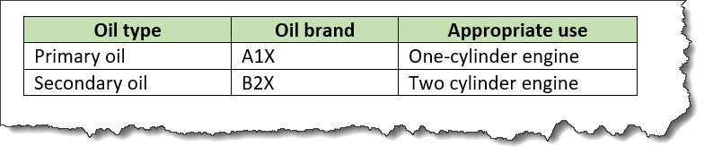

<properties>
A properties table describes the properties of a thing, such as an object, part, or category. Each property can include the type, value, and a description.
Usage information
A properties table typically is represented as a simple table with a maximum of three columns. The first column is for the property type, the second column can contain a value or values for the property, and the third column can contain a description.
An optional header row can provide labels for the columns, if an author does not want to use the default labels that might be provided by stylesheets.
Rendering expectations
If a properties table does not contain a header row, processors typically auto-generate labels for the columns in the properties table. The text for the labels is specified in stylesheets.
Specialization hierarchy
The <properties> element is specialized from
<simpletable>. It is defined in the reference module.
Attributes
The following attributes are available on this element: universal attributes, display attributes, and simpletable attributes.
The following attributes are available on this element: universal attributes and the attributes defined below.
@expanse(display attributes)- Specifies the horizontal placement of the element. The
following values are valid:
- column
- Indicates that the element is aligned with the current column margin.
- page
- Indicates that the element is placed on the left page margin for left-to-right presentation or the right page margin for right-to-left presentation.
- spread
- Indicates that the object is rendered across a multi-page spread. If the output format does not have anything that corresponds to spreads, then spread has the same meaning as page.
- textline
- Indicates that the element is aligned with the left (for left-to-right presentation) or right (for right-to-left presentation) margin of the current text line and takes indentation into account.
- -dita-use-conref-target
- See Using the -dita-use-conref-target value for more information.
For
<table>, in place of the@expanseattribute that is used by other DITA elements, the@pgwideattribute is used in order to conform to the OASIS Exchange Table Model.Some processors or output formats might not support all values.
@frame(display attributes)- Specifies which portion of a border surrounds the element.
The following values are valid:
- all
- Indicates that a line is rendered at the top, bottom, left, and right of the containing element.
- bottom
- Indicates that a line is rendered at the bottom of the containing element.
- none
- Indicates that no lines are rendered.
- sides
- Indicates that a line is rendered at the left and right of the containing element.
- top
- Indicates that a line is rendered at the top of the containing element.
- topbot
- Indicates that a line is rendered at the top and bottom of the containing element.
- -dita-use-conref-target
- See Using the -dita-use-conref-target value for more information.
Some processors or output formats might not support all values.
@keycol(simpletable attributes)- Specifies the column that contains the
content that represents the key to the tabular
structure. If
@keycolis present and assigned a numerical value, the specified column is treated as a vertical header. @relcolwidth(simpletable attributes)- Specifies the width of each column in relationship to the
width of the other columns. The value is a space-separated list
of relative column widths. Each column width is specified as a
positive integer or decimal number followed by an asterisk
character.
For example, the value
relcolwidth="1* 2* 3*"gives a total of 6 units across three columns. The relative widths are 1/6, 2/6, and 3/6 (16.7%, 33.3%, and 50%). Similarly, the valuerelcolwidth="90* 150*"causes relative widths of 90/240 and 150/240 (37.5% and 62.5%). @scale(display attributes)- Specifies the percentage by which fonts are resized in
relation to the normal text size. The value of this attribute
is a positive integer. When used on
<table>or<simpletable>, the following values are valid: 50, 60, 70, 80, 90, 100, 110, 120, 140, 160, 180, 200, and -dita-use-conref-target.This attribute is primarily useful for print-oriented display. Some processors might not support all values.
If the
@scaleattribute is specified on an element that contains an image, the image is not scaled. The image is scaled only if a scaling property is explicitly specified for the<image>element.
Examples
This section is non-normative.
This section contains examples of how the
<properties> element can be used.
The following code sample shows a
<properties> element that describes
information about motor oil types:
<properties>
<prophead>
<proptypehd>Oil type</proptypehd>
<propvaluehd>Oil brand</propvaluehd>
<propdeschd>Appropriate use</propdeschd>
</prophead>
<property>
<proptype>Primary oil</proptype>
<propvalue>A1X</propvalue>
<propdesc>One-cylinder engines</propdesc>
</property>
<property>
<proptype>Secondary oil</proptype>
<propvalue>B2Z</propvalue>
<propdesc>Two-cylinder engines</propdesc>
</property>
</properties>The properties table might be rendered as follows:

The following code sample shows a properties table with spanned cells:
<properties>
<prophead>
<proptypehd>Visual element</proptypehd>
<propvaluehd>Value</propvaluehd>
<propdeschd>What it does</propdeschd>
</prophead>
<property>
<proptype rowspan="3">Color</proptype>
<propvalue>Red</propvalue>
<propdesc>Indicates an error</propdesc>
</property>
<property>
<propvalue>Green</propvalue>
<propdesc>Indicates that conditions are good</propdesc>
</property>
<property>
<propvalue>Yellow</propvalue>
<propdesc>Indicates that a problem might exist</propdesc>
</property>
<property>
<proptype>Shape</proptype>
<propvalue>Circle, square, or triangle</propvalue>
<propdesc>Use to add contrast and depth</propdesc>
</property>
</properties>The properties table might be rendered as follows: